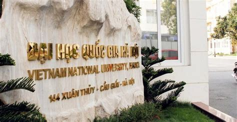
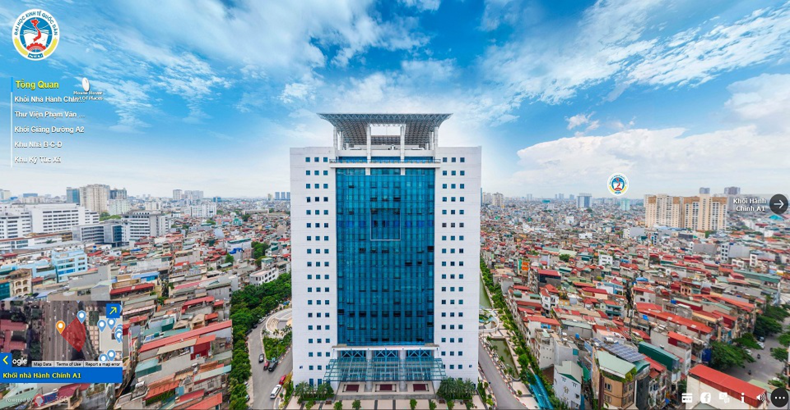
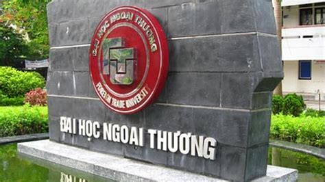

Thông tin tuyển sinh các trường

Địa chỉ: 216 Nghĩa Đô, Cầu Giấy, Hà Nội
Địa chỉ: 1 Đại Cồ Việt, Hai Bà Trưng, Hà Nội

Địa chỉ: 207 Giảng Võ, Đống Đa, Hà Nội

Địa chỉ: 91-93 Nguyễn Trãi, Thanh Xuân, Hà Nội
Địa chỉ: 136 Xã Đàn, Đống Đa, Hà Nội
Địa chỉ: Số 21 Lê Hồng Phong, Hà Nội
Dựa trên thông tin từ các nguồn chính thức, các phương thức xét tuyển năm 2025 của Đại học Quốc gia Hà Nội (VNU) dự kiến như sau:
Lưu ý:
Dựa trên thông tin từ các nguồn đáng tin cậy trong năm 2025, Đại học Bách khoa Hà Nội (HUST) sử dụng 3 phương thức xét tuyển chính như sau:
Gồm 3 hình thức:
Đối tượng: Thí sinh tốt nghiệp THPT năm 2025, đạt thành tích cao trong các kỳ thi do Bộ GD&ĐT tổ chức:
Điều kiện:
Đối tượng: Thí sinh tốt nghiệp THPT năm 2025, điểm trung bình học tập mỗi năm lớp 10, 11, 12 đạt từ 8.0 trở lên và đáp ứng 1 trong các điều kiện:
Lưu ý:
1. Xét tuyển thẳng
Áp dụng cho các đối tượng theo quy định của Bộ GD&ĐT, bao gồm:
Chỉ tiêu: 2% tổng chỉ tiêu
2. Xét tuyển theo kết quả thi tốt nghiệp THPT 2025
Sử dụng 4 tổ hợp xét tuyển:
Không có chênh lệch điểm giữa các tổ hợp
Ngưỡng đảm bảo chất lượng đầu vào dự kiến: 20 điểm (đã bao gồm điểm ưu tiên)
Chỉ tiêu: 15% tổng chỉ tiêu (giảm 3% so với năm 2024)
3. Xét tuyển kết hợp
Áp dụng cho 3 nhóm đối tượng:
Nhóm 1: Thí sinh có chứng chỉ quốc tế
Nhóm 2: Thí sinh có điểm thi đánh giá năng lực/tư duy
Nhóm 3: Thí sinh có chứng chỉ tiếng Anh quốc tế kết hợp điểm thi THPT
Tổng chỉ tiêu xét tuyển kết hợp: 83% (tăng 3% so với năm 2024)
Lưu ý:
1. Xét tuyển dựa trên kết quả học tập THPT
Áp dụng cho 3 nhóm đối tượng:
Nhóm 1: Thí sinh tham gia/đạt giải kỳ thi học sinh giỏi quốc gia hoặc cuộc thi khoa học kỹ thuật cấp quốc gia
Nhóm 2: Học sinh hệ chuyên từ các trường THPT chuyên, trọng điểm quốc gia
Nhóm 3: Thí sinh đạt giải Nhất, Nhì, Ba kỳ thi học sinh giỏi cấp tỉnh/thành phố lớp 11 hoặc 12
2. Xét tuyển dựa trên kết quả thi tốt nghiệp THPT 2025
Có 2 hình thức:
Hình thức 1: Xét tuyển chỉ dựa trên điểm thi
Hình thức 2: Xét tuyển kết hợp điểm thi và chứng chỉ ngoại ngữ quốc tế
3. Xét tuyển dựa trên chứng chỉ đánh giá năng lực
Áp dụng cho 2 nhóm đối tượng:
Nhóm 1: Thí sinh có chứng chỉ đánh giá năng lực trong nước
Nhóm 2: Thí sinh có chứng chỉ quốc tế
4. Xét tuyển thẳng
Lưu ý:
Dựa trên thông tin từ các nguồn chính thức, các phương thức xét tuyển năm 2025 của Trường Đại học Sư phạm Hà Nội (HNUE) như sau:
1. Phương thức 1 (PT1): Xét tuyển dựa trên điểm thi tốt nghiệp THPT năm 2025
2. Phương thức 2 (PT2): Xét tuyển thẳng, ưu tiên xét tuyển thí sinh có năng lực, thành tích vượt trội
3. Phương thức 3 (PT3): Xét tuyển dựa trên điểm thi đánh giá năng lực SPT năm 2025
Lưu ý:
Dựa trên thông tin từ các nguồn đáng tin cậy, các phương thức xét tuyển năm 2025 của Trường Đại học Y Hà Nội (HMU) dự kiến như sau:
1. Xét tuyển thẳng
2. Xét điểm thi tốt nghiệp THPT
Sử dụng kết quả thi tốt nghiệp THPT năm 2025
Tổ hợp xét tuyển:
3. Xét tuyển kết hợp
Kết hợp điểm thi tốt nghiệp THPT với chứng chỉ ngoại ngữ quốc tế
Áp dụng cho các ngành:
Yêu cầu chứng chỉ ngoại ngữ: IELTS 6.0 trở lên hoặc tương đương
4. Xét tuyển dựa trên kết quả thi đánh giá năng lực
Sử dụng kết quả bài thi đánh giá năng lực của Đại học Quốc gia Hà Nội (HSA)
Điểm xét tuyển = Điểm bài thi HSA + Điểm ưu tiên (nếu có)
Một số điểm mới đáng chú ý:
Trường sẽ công bố chi tiết chỉ tiêu và điều kiện cụ thể cho từng phương thức xét tuyển trong đề án tuyển sinh chính thức.
© Thông tin các trường, All Right Reserved.
Designed By HTML Codex